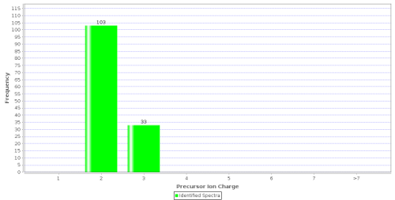

Explanation
A bar chart representing the distribution of the precursor ion charges for the whole experiment. This information can be used to identify potential ionization problems including many 1+ charges from an ESI ionization source or an unexpected distribution of charges. MALDI experiments are expected to contain almost exclusively 1+ charged ions. An unexpected charge distribution may furthermore be caused by specific search engine parameter settings such as limiting the search to specific ion charges.
In this ESI experiment there are no single charged ions but only double and triple charged ones.